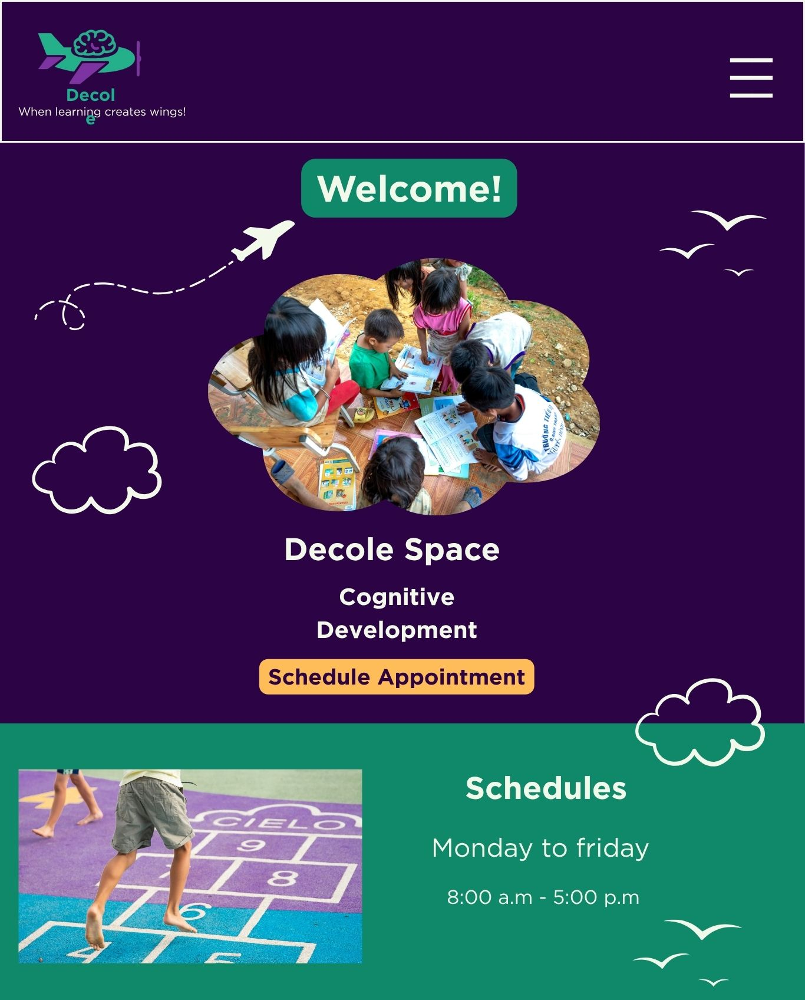

1. Site Name
Name: Decole Psychopedagogical Clinic
The name "Decole" (Take off) symbolizes development, growth, and autonomy in the learning process, referring to the idea of gaining wings for knowledge.
2. Site Purpose
The main objective of the website is to present Decole Psychopedagogical Clinic, its specialized services, and its humanized approach, facilitating initial contact and appointment scheduling.
3. Scenarios
Common questions the website should answer:
- "How can psychopedagogy help my child with difficulties at school?"
- "I am an adult and have always had difficulty concentrating; can I receive support?"
- "What are the clinic's service hours?"
4. Color Schema
- Primary (#2c0344): Used for main headings and the header.
- Secondary (#10896b): Used for navigation elements and visual highlights.
- Accent (#f2f9ea): Used as a background color to soften reading.
5. Typography
The chosen font family is Roboto, due to its excellent readability on digital screens and modern feel.
Heading 1 - Roboto Bold (32px)
Heading 2 - Roboto Bold (24px)
Body Text - Roboto Regular (16px). This is an example of how paragraphs and general content will be displayed on the site to ensure visual comfort and professionalism.
6. Wireframes
Structural sketches of the Home Page:
Mobile View

Desktop View

Note: Wireframes include a header with a logo, a hero section with a call-to-action (CTA) button, and informative blocks.
7. Technical Implementation
The following techniques and practices will be applied to this project to ensure a robust, high-performance, and modern web application:
- Structure & Metadata: CSS Normalization for cross-browser consistency, custom Favicon, and Social Media Meta Tags (Open Graph).
- Development Architecture: Programming with ES6 Modules for clean and maintainable code.
- Data & Connectivity: Utilizing JSON (JavaScript Object Notation) for data exchange
and the Fetch API combined with
async/awaitfor asynchronous requests. - User Interface (UI): Implementation of native HTML Modals for focused interactions and CSS Animations & Transitions for smooth visual feedback.
- Navigation: Application of Wayfinding techniques to ensure intuitive user orientation throughout the interface.
- User Experience (UX): Advanced HTML Forms for data validation and a focus on Page Performance optimization.